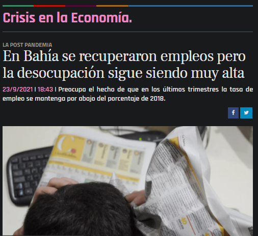

Los datos oficiales reflejan una recuperación del mercado laboral local tras el estricto confinamiento obligatorio del segundo trimestre de 2020, pese a que sigue siendo muy elevada la cantidad de bahienses sin empleo, que es de 13.000 personas, lo que equivale al 8,8% de los activos, según las estadísticas oficiales
Así, la Tasa de Empleo (TD), esto es, el porcentaje de bahienses que posee un empleo, se recuperó desde el 34,3 por ciento del segundo trimestre de 2020 (en pleno aislamiento) hasta el 42% de idéntico período, pero de este año.
El dato muestra una importante recuperación de los empleos que se habían destruido por la imposibilidad de salir a trabajar en el lapso abril-junio de 2020.
Dicha recuperación se dio en un contexto de aumento de la participación de los bahienses en el mercado laboral (es decir, subió el porcentaje de bahienses activos, vale aclarar, los que tenían empleo o, en caso de no tenerlo, lo buscaban en forma resuelta), algo que se evidenció a través del aumento de la Tasa de Actividad (TA), que pasó del 37,6% al actual 46,1%.
Artículo 1 Noticia real del diario La Nueva 